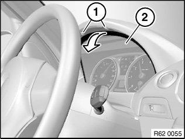
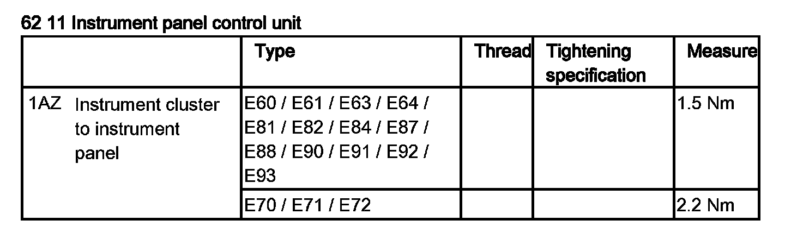

Instrument Cluster / Carrier: Service and Repair
62 11 280 Removing And Installing (Replacing) Instrument Cluster

IMPORTANT: Read and comply with notes on protection against electrostatic damage (ESD protection).

IMPORTANT:
Risk of damage.
Carry out this operation carefully so as to avoid damaging the instrument panel.
Extend steering wheel completely and lower.
Release screws (1). Tightening torque 62 11 1AZ.
Pull instrument cluster (2) forward slightly in direction of arrow.
Disconnect associated plug connection.
If necessary, feed out/unclip associated wiring harness.
Remove instrument cluster (2).

Replacement:
Carry out vehicle programming/coding.
Check values for Condition Based Service (CBS) and correct if necessary.
